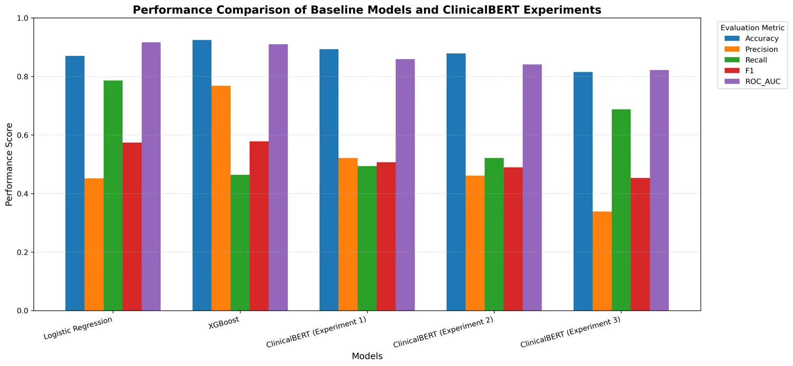

How do traditional text models compare with ClinicalBERT?
TF-IDF features fed Logistic Regression and XGBoost; fine-tuned ClinicalBERT learned contextual text representations.
CASE STUDY / HEALTHCARE ANALYTICS
My Major Research Project at Toronto Metropolitan University examines whether clinical notes from the first 24 hours of ICU admission can support sepsis risk classification.
01 / PROJECT OVERVIEW
This retrospective study uses MIMIC-III ICU records to compare conventional text classification with a clinical language model.
I constructed a cohort using ICD-9 diagnosis codes, extracted notes recorded in the first 24 hours, and compared TF-IDF with Logistic Regression and XGBoost against three ClinicalBERT configurations. I evaluated accuracy, precision, recall, F1, and ROC-AUC, then explored model explanations.
02 / RESEARCH QUESTIONS
The study asks whether the added complexity of a transformer improves classification from early clinical notes.
TF-IDF features fed Logistic Regression and XGBoost; fine-tuned ClinicalBERT learned contextual text representations.
Threshold adjustment and sliding-window inference changed the balance between recall and false positives.
The project examines influential text features and token-level explanations while noting their limits.
03 / MODEL RESULTS
Results on the held-out test set; model choices involve different precision and recall trade-offs.

Logistic Regression achieved the highest recall (78.62%) and ROC-AUC (0.9169), with precision of 45.22%. XGBoost had the highest precision (76.84%) and F1 (57.85%), but lower recall (46.38%).
The strongest ClinicalBERT configuration reached 0.8592 ROC-AUC. Sliding-window inference raised ClinicalBERT recall to 68.75%, while precision fell to 33.82%.
04 / TAKEAWAY & LIMITATIONS
For this dataset and evaluation, the TF-IDF models outperformed ClinicalBERT on key metrics. Logistic Regression found more labeled sepsis cases; XGBoost yielded fewer false positives.
Sepsis labels came from diagnosis codes, and the retrospective data came from one medical center. Some first-day notes may explicitly mention sepsis, so these results do not establish prospective early detection or clinical readiness. The source data requires credentialed PhysioNet access.